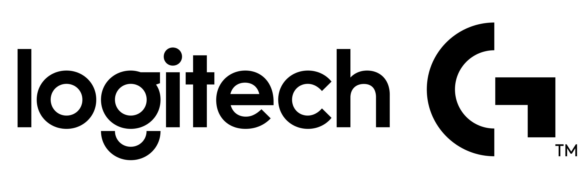

О компании Logitech
Logitech — компания, выпускающая компьютерную периферию и аксессуары: мыши, клавиатуры, веб-камеры, гарнитуры и другие устройства.
Продукция бренда используется дома, в офисе, в учёбе и в компьютерных играх.
Посмотреть модели
Почему выбирают компьютерные мыши Logitech
- Разнообразие моделей для разных задач.
- Проводные и беспроводные варианты подключения.
- Дополнительные кнопки и настройки у отдельных моделей.
- Программное обеспечение для настройки совместимых устройств.
Интересный факт: Logitech была основана в 1981 году в Швейцарии.
Полезная ссылка
Подробнее о продукции можно узнать на официальном сайте Logitech.